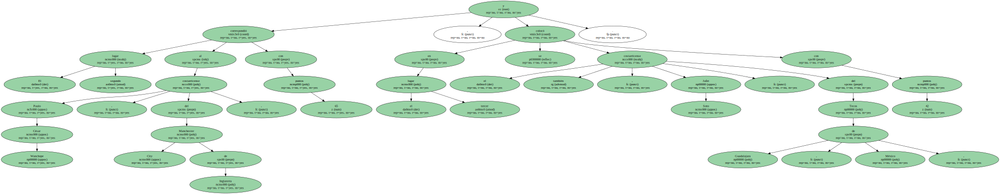
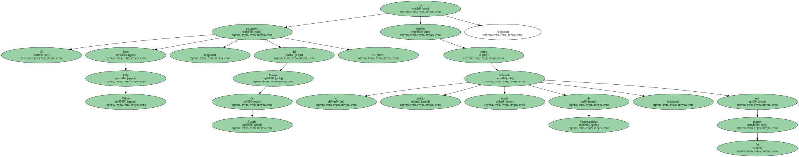
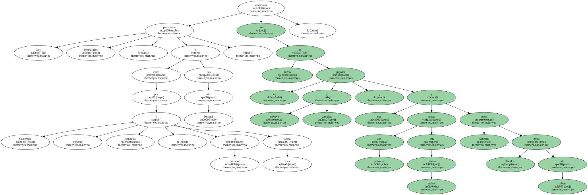
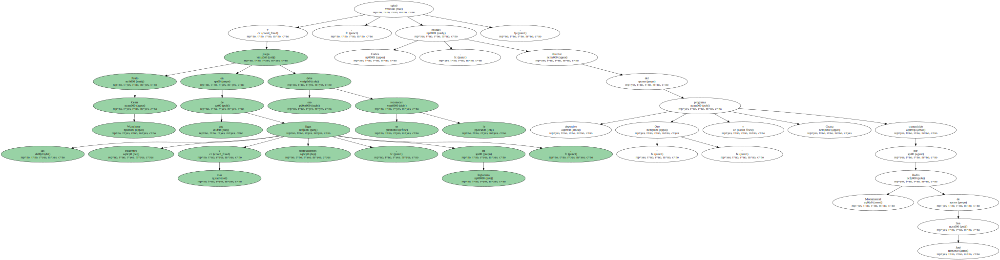
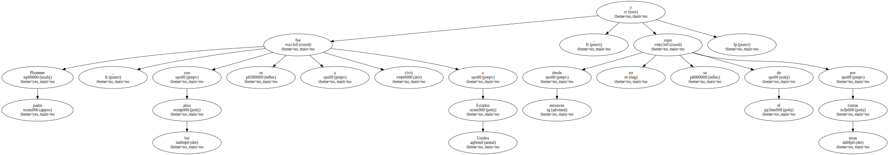
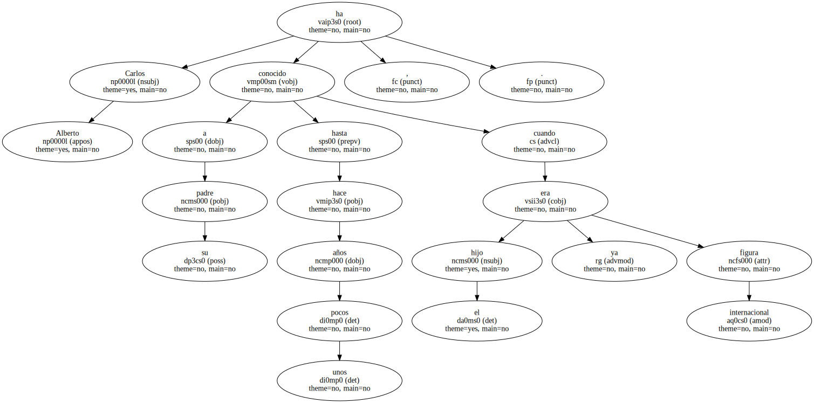
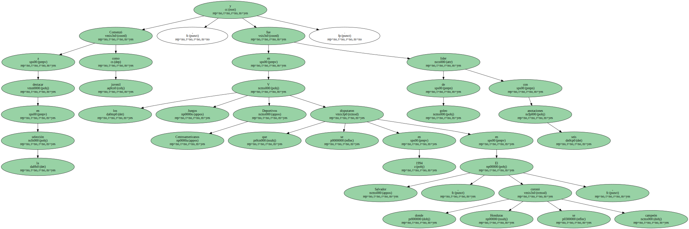
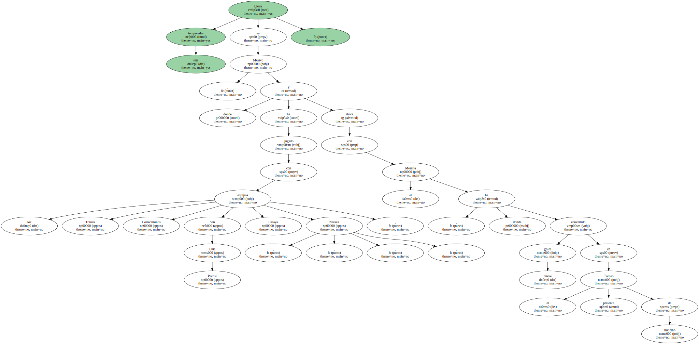
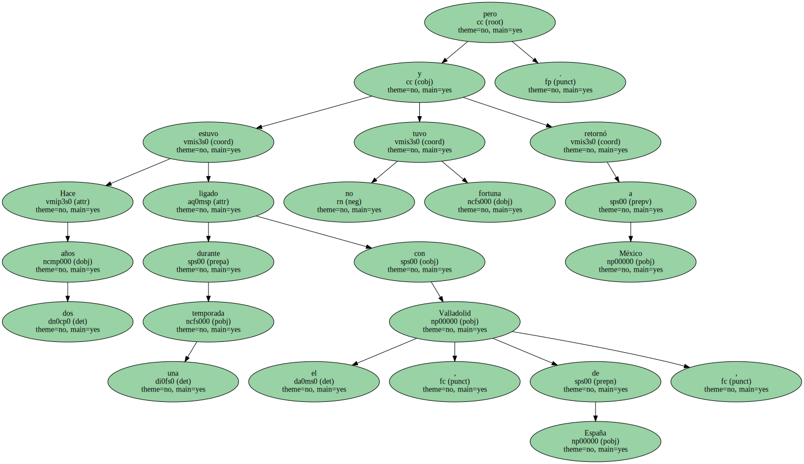

Pavón , de 26 años , logró 86 puntos de un total de 115 posibles en una consulta promovida por el diario costarricense entre 23 periodistas del área a quienes pidió citar por los cinco mejores jugadores de Centroamérica.

El segundo lugar correspondió al costarricense Paulo César Wanchope , del Manchester City de Inglaterra , con 65 puntos , y en el tercer lugar se colocó el también costarricense , Jafet Soto , del Tecos de Guadalajara , México , con 42 puntos.
El panameño Julio Dely Valdés , del Málaga de España , fue elegido como el quinto mejor futbolista de Centroamérica , con 30 puntos.
Los periodistas consultados , cinco por Guatemala , Honduras , El Salvador y Costa Rica y tres de Panamá , destacaron que Pavón es un efectivo y completo jugador , que remata con potencia con ambas piernas y también anota lucidos goles de cabeza.
" Es figura goleadora del Morelia ( México ) y de la Selección de Honduras , además posee una trayectoria destacada y es más veloz que Wanchope " , comentó Oscar Flores , redactor de " El Tiempo " de Honduras , Según publica el diario costarricense.

Paulo César Wanchope juega en una de las ligas más exigentes y sobresalientes , en Inglaterra , y eso se le debe reconocer , opinó Miguel Cortés , director del programa deportivo " Oro y Grana " transmitido por Radio Monumental de San José.
Carlos Alberto Pavón Plummer , de 26 años , es hijo de Blanca Nieves Pavón , una humilde hondureña , y del costarricense Allord Plummer , un ex jugador costarricense que en los años 70 fue goleador en el Marathón , de San Pedro Sula , uno de los equipos más populares de Honduras , con mayor afición en la zona norte del país.
Plummer padre , con los años se fue a vivir a Estados Unidos , y desde entonces no se supo de él por estas tierras.
Carlos Alberto ha conocido a su padre hasta hace unos pocos años , cuando el hijo ya era figura internacional.
Pavón Plummer se inició como jugador profesional en el Real Club Deportivo España , de San Pedro Sula.

Comenzó a destacar como juvenil en la selección , y en los V Juegos Deportivos Centroamericanos que se disputaron en 1994 en El Salvador , donde Honduras se coronó campeón , fue líder de goleo con seis anotaciones.
Lleva seis temporadas en México , donde ha jugado con los equipos Toluca , Correcaminos , San Luis Potosí , Celaya , Necaxa , y ahora con el Morelia , donde ha convertido nueve goles en el presente Torneo de Invierno.
Hace dos años estuvo ligado durante una temporada con el Valladolid , de España , pero no tuvo fortuna y retornó a México.
En las actuales eliminatorias para el mundial de Corea del Sur y Japón`2002 , es capitán de la selección hondureña.